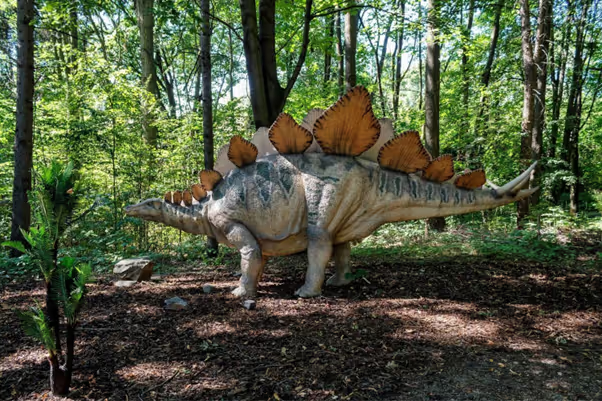
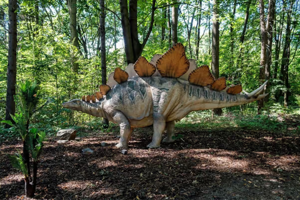

Discover the World of Dinosaurs
Dinosaurs ruled the Earth for over 165 million years, long before humans appeared. They were a diverse group of reptiles that lived during the Mesozoic Era, often called the “Age of Dinosaurs,” which was divided into three periods: the Triassic, Jurassic, and Cretaceous.
🦕 Herbivorous Dinosaurs
Herbivores were plant-eating dinosaurs. Many had long necks to reach tall trees, or beaks for clipping tough vegetation. Some of the most famous herbivores include:
- Brachiosaurus – A massive dinosaur with a long neck, capable of eating leaves high in the trees.
- Triceratops – Known for its three horns and large frill used for defense and display.
- Stegosaurus – Famous for the row of plates on its back and its spiked tail.

 

🦖 Carnivorous Dinosaurs
Carnivores were meat-eating predators that hunted other dinosaurs or scavenged for food. They often had sharp teeth and powerful jaws. Famous carnivores include:
- Tyrannosaurus Rex – One of the largest land predators, with massive jaws and bone-crushing teeth.
- Velociraptor – A smaller but intelligent and fast predator, often hunting in packs.
- Allosaurus – A fierce hunter that lived during the Jurassic period.


💥 The Extinction Event
Around 66 million years ago, a massive asteroid impact caused drastic climate changes, leading to the extinction of most dinosaurs. Only birds — which evolved from small theropod dinosaurs — survived, making them the last living dinosaurs on Earth today.